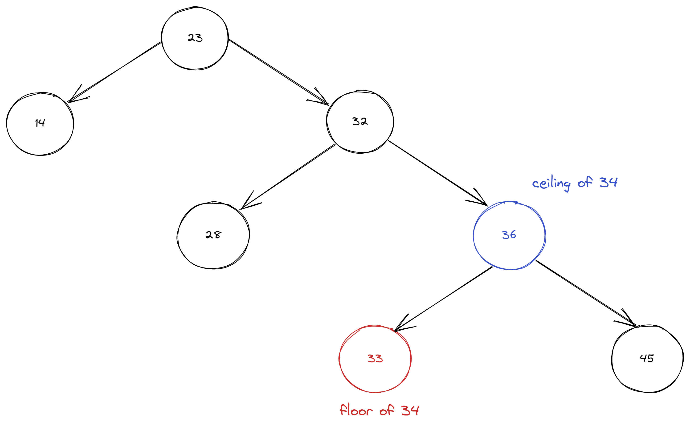
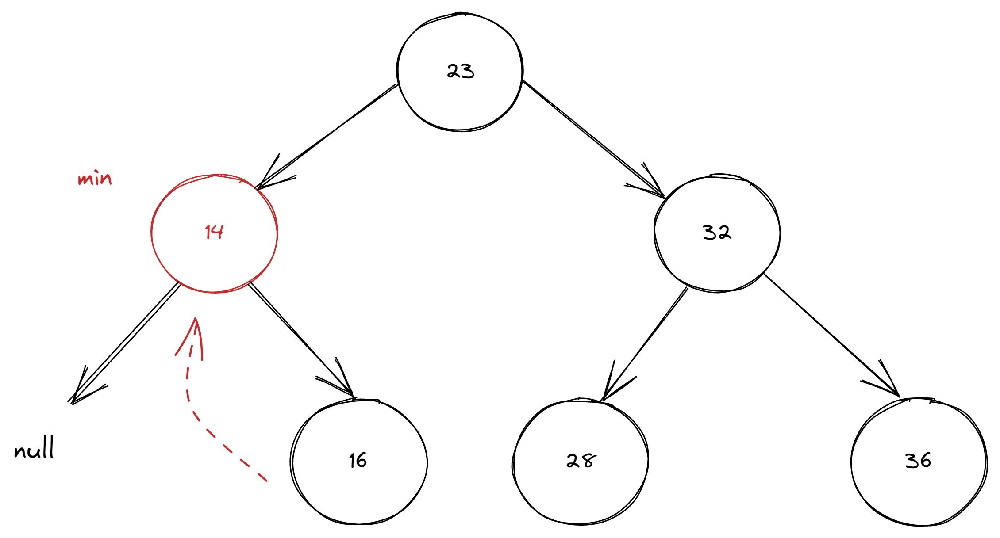
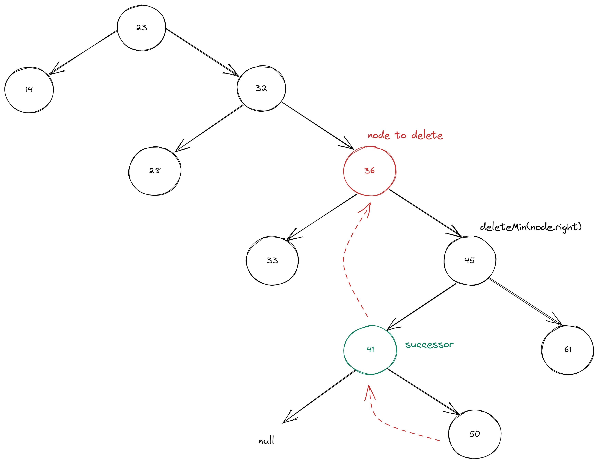

Binary Search Tree: Part 2 min, floor, delete. Algorithms series
2022-07-14An important feature of Binary Search Tree (BST) is that it allows keeping keys in order. So we are able to apply wide range of operations that involves relative key order.
In this article we will take a look at some of them.
As in the previous part we will use TDD to ensure algorithm correctness.
MIN
min() method should return the smallest key.
@Test
void shouldReturnMinKeyInBST() {
BinarySearchTree<Integer, String> bst = new BinarySearchTree<>();
bst.put(23, "value1");
bst.put(15, "value2");
bst.put(56, "value3");
bst.put(7, "value4");
bst.put(71, "value5");
assertEquals(7, bst.min());
}
The implementation of MIN key is quite simple, we need to go left recursively until left node is null.
public Key min() {
return min(root).key;
}
private Node min(Node node) {
if (node.left == null) return node;
return min(node.left);
}
The implementation of MAX key will be the same, only we need to go recursively right.
Floor and ceiling
floor() method should return the largest key less than or equal to given key.
ceiling() method should return smallest key grater than or equal to given key. 
Test cases for floor() should check:
- that floor of an existing key in BST returns same key
- that floor returns the largest key that less than given key
@Test
void shouldReturnFloorWhenGivenKeyIsEqual() {
BinarySearchTree<Integer, String> bst = new BinarySearchTree<>();
bst.put(23, "value1");
bst.put(14, "value2");
bst.put(32, "value3");
assertEquals(14, bst.floor(14));
}
@Test
void shouldReturnFloorWhenGivenKeyIsLarger() {
BinarySearchTree<Integer, String> bst = new BinarySearchTree<>();
bst.put(23, "value1");
bst.put(14, "value2");
bst.put(32, "value3");
bst.put(36, "value4");
bst.put(33, "value5");
assertEquals(33, bst.floor(34));
}
In the implementation we compare given key to the key of a Node to find Subtree first, and then key that smaller or equals to the key.
public Key floor(Key key) {
Node node = floor(root, key);
if (node == null) return null;
return node.key;
}
private Node floor(Node node, Key key) {
if (node == null) return null;
int keyCmp = key.compareTo(node.key);
if (keyCmp == 0) {
return node;
}
if (keyCmp < 0) return floor(node.left, key);
Node rightNode = floor(node.right, key);
if (rightNode != null) return rightNode;
else return node;
}
ceiling() implementation will be the same as floor() with right, left and <, > interchanged.
DELETE
Deletion in the BST can seem tricky, when you do not stare at those trees few days in a row. First, we need to implement deleteMit() method. So it can be reused later in deletion.
Test case should check that there is no key present after deletion.
@Test
void shouldDeleteMinElement() {
BinarySearchTree<Integer, String> bst = new BinarySearchTree<>();
bst.put(23, "value1");
bst.put(14, "value2");
bst.put(32, "value3");
bst.deleteMin();
assertNull(bst.get(14));
}
To delete element with a minimal key we need to go through next steps:
- find the minimal node - go left until left node is null
- remove it - replace node to be deleted with the child right node
- update node number

public void deleteMin() {
root = deleteMin(root);
}
private Node deleteMin(Node node) {
if (node.left == null) {
return node.right;
}
node.left = deleteMin(node.left);
node.subtreeNodeNumber = size(node.left) + size(node.right) + 1;
return node;
}
With the deleteMin() in place we can proceed with delete.
Test cases for delete() should check:
- that there is no key present
- that successor of deleted element is correct
@Test
void shouldDeleteElementByGivenKey() {
BinarySearchTree<Integer, String> bst = new BinarySearchTree<>();
bst.put(23, "value1");
bst.put(14, "value2");
bst.put(32, "value3");
bst.put(36, "value4");
bst.put(33, "value5");
bst.delete(32);
assertNull(bst.get(32));
}
@Test
void successorShouldBeTheMinKeyInRightSubtree() {
BinarySearchTree<Integer, String> bst = new BinarySearchTree<>();
bst.put(23, "value1");
bst.put(14, "value2");
bst.put(32, "value3");
bst.put(36, "value4");
bst.put(28, "value5");
bst.put(33, "value6");
bst.put(45, "value7");
bst.put(61, "value8");
bst.put(41, "value9");
bst.put(50, "value10");
bst.delete(36);
assertEquals(41, bst.root.right.right.key);
}
So, we need next steps to implement deletion:
- find the node by comparing the key
- if node to delete has only one child, we simply replace it with a child node
- save the node to be deleted
- get the successor, which is minimal value of the right subtree min(node.right)
- apply deleteMin() because we need to replace successor’s node (left node) with the right node in this subtree
- left link of the successor will be the left node to be deleted 
public void delete(Key key) {
root =delete(root, key);
}
private Node delete(Node node, Key key) {
if (node == null) {
return null;
}
int cmp = key.compareTo(node.key);
if (cmp < 0) {
node.left = delete(node.left, key);
}
if (cmp > 0) {
node.right = delete(node.right, key);
} else {
if (node.right == null) return node.left;
if (node.left == null) return node.right;
Node nodeToDelete = node;
// find successor
node = min(nodeToDelete.right);
node.left = nodeToDelete.left;
node.right = deleteMin(nodeToDelete.right);
}
node.subtreeNodeNumber = size(node.left) + size(node.right) + 1;
return node;
}
Complete implementation with test cases can be found on GitHub.
Sources:
- Algorithms by Robert Sedgewick.
- Introduction to Algorithms by Thomas H. Cormen, Charles E. Leiserson, Ronald L. Rivest, Clifford Stein.